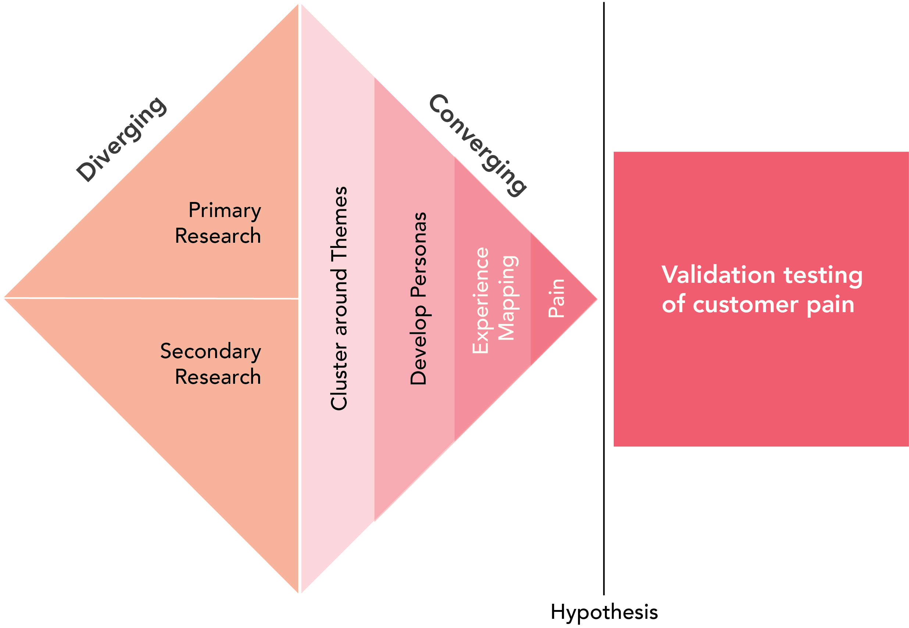

6 Validate Customer Pain
Using the scientific method to determine whether the pain hypothesis is supported
Validating Pain Hypotheses
Validating pain hypotheses is crucial yet distinct from validating solution concepts. Entrepreneurs often leap into developing and testing solutions without thoroughly understanding the underlying customer pains. This chapter underscores the importance of a methodical and evidence-based approach to confirm or refute the pains your potential customers experience.
Validating pain hypotheses involves a scientific methodology applied to entrepreneurship. It requires a clear definition of the suspected pain, a strategic approach to gathering data, and a rigorous analysis to interpret the results. This process ensures that the solutions you develop are not just innovative but are also addressing real and significant customer pains.

The distinction between validating pains and solutions lies in the focus. While solution validation is about testing the viability, desirability, and feasibility of your product or service, pain validation is about confirming the existence and intensity of the problem your solution intends to solve. By validating pains, entrepreneurs gain a deeper understanding of their customers’ needs, which leads to more effective and impactful solutions.
In this chapter, we will walk through the process of designing and conducting experiments specifically aimed at validating pain hypotheses. We will cover how to craft precise, testable hypotheses, design experiments to test these hypotheses, and analyze the results to make informed decisions. This approach is not just about avoiding the common pitfall of solving the wrong problem, but also about building a solid foundation for your entrepreneurial venture.
The goal is to equip you with the tools and mindset to critically assess the customer pains you aim to alleviate. This ensures that your entrepreneurial efforts are directed towards creating value in a market where customers are actively seeking solutions. Let’s begin by exploring how to craft a hypothesis that accurately reflects the pain you’re investigating.
The Scientific Method in Entrepreneurship
Entrepreneurship, often perceived as a field driven by creativity and innovation, also significantly relies on the scientific method. This method provides a structured approach to discovering and validating truths about the market, customer behaviors, and unmet needs. By incorporating the principles of the scientific method, entrepreneurs can transform their ventures from guesswork-driven enterprises to data-driven businesses.
Embracing Testable Hypotheses
A cornerstone of the scientific method in entrepreneurship is the formulation of testable hypotheses. These hypotheses should be clear and specific statements that can be proven true or false through experimentation. For instance, a hypothesis like “College students experience inconvenience in laundry management” is vague. A more testable version would be “70% of college students in urban universities rank laundry in the top 10 biggest challenges of college life.”
Precision in Hypothesis Formation
Precision is key when formulating a hypothesis. It involves defining the ‘what’, ‘who’, and ‘when’ with clarity. This precision ensures that your experiments are focused and relevant. A hypothesis that is too broad or ill-defined can lead to inconclusive or misleading results, thereby wasting resources and time.
Discrete Hypotheses
Each hypothesis should focus on a single aspect of the pain or problem you are investigating. It’s crucial to avoid combining multiple elements into one hypothesis, as this complicates the testing process and makes it difficult to interpret results. If multiple aspects need to be tested, they should be broken down into discrete hypotheses.
Replication and Triangulation
In scientific research, replication - the ability for an experiment to be repeated with consistent results - is a testament to the reliability of your findings. In entrepreneurship, designing experiments that can be replicated ensures that the data you collect is robust and trustworthy.
Triangulating data involves using multiple methods or sources to test the same hypothesis. This approach provides a more comprehensive view and reduces the risk of biases or errors from any single source. For example, a hypothesis about customer preferences can be tested through surveys, interviews, and observational studies. The convergence of findings from these varied sources increases the confidence in the validity of the hypothesis.
By integrating the scientific method into the entrepreneurial process, you not only validate customer pains more effectively but also position your venture for more informed decision-making and strategic growth. The next step is to delve into crafting and refining hypotheses that are the building blocks of this scientific approach.
Designing Confirmatory Experiments
When it comes to validating hypotheses about customer pain, designing confirmatory experiments is crucial. These experiments provide concrete evidence to support or refute your assumptions and guide your entrepreneurial journey.
Crafting Your Hypothesis
The first step is to articulate your hypothesis clearly. It should directly address the customer pain you suspect exists. A well-structured hypothesis is specific, addresses a single pain point, and sets the stage for objective testing. For instance, a hypothesis could be: “40% of remote workers in urban areas experience significant stress due to poor home office setups.”
Examples of Well-Structured Hypotheses
- “60% of parents with toddlers believe there is a lack of engaging educational apps for children under 3 years.”
- “At least 50% of small business owners struggle with managing their social media marketing effectively.”
Experiment Design
Steps for Designing an Experiment
- Define the Objective: Clearly state what you intend to test. For example, the objective could be to determine the percentage of young parents who feel the need for more educational apps for toddlers.
- Methodology: Decide whether you will use surveys, interviews, observational studies, or a combination of these methods.
- Instrument Design: Develop the tools for data collection, like questionnaires or interview guides. Ensure questions are unbiased and directly related to your hypothesis.
- Execution Plan: Outline how and when you will conduct your experiments. This includes logistical details like location, time frame, and resources needed.
Choosing the Right Sample
Avoid convenience sampling as it can lead to biased results. Instead, strive to reach a sample that accurately represents your target customer base. If your hypothesis is about young parents, ensure your sample includes a diverse range of parents in terms of age, location, and socioeconomic status.
Defining Measures and Evaluation Criteria
Be clear about what you will measure and how you will interpret the results. If your hypothesis involves a percentage (like 40% of remote workers), your measure will be the proportion of respondents who affirm the pain point.
Sample and Sample Size
Selecting a Sample
Your sample should reflect the diversity within your target customer group. This might require segmenting your target market and sampling from each segment. Also, consider factors like geographical diversity, different lifestyles, and varying levels of experience with the problem you’re investigating.
Determining Sample Size
The size of your sample depends on the size of your target market and the precision you need. For a broad market, a larger sample gives more reliable results. Statistical tools and expert consultation can help in determining the right sample size.
In summary, designing and conducting confirmatory experiments is a careful balance of methodological rigor and practical constraints. By meticulously planning and executing these experiments, you validate your hypotheses about customer pains with a high degree of confidence, thereby paving the way for successful innovation. Next, we’ll explore the practical aspects of running these experiments and analyzing their outcomes.
Conducting the Experiment
Conducting the experiment with precision and objectivity is key to validating pain hypotheses. This section covers techniques for interviews and surveys, and the best practices for data recording and management.
Interview and Survey Techniques
Best Practices for Conducting Interviews and Surveys
- Prepare: Clearly understand your hypothesis and prepare questions that directly seek to validate it.
- Build Rapport: Establish a connection with the interviewee to make them comfortable in sharing their experiences and pains.
- Open-Ended Questions: Frame questions that encourage detailed responses, such as “Can you describe a recent instance where you felt the need for a better home office setup?”
- Probe Gently: If a respondent touches on a relevant pain point, gently probe deeper to uncover specific details and emotions.
Examples of Effective Questions
- “What has been your biggest challenge with managing your business’s social media accounts?”
- “Can you walk me through the last time you felt the need for a better educational app for your child?”
Reducing Bias and Obtaining Genuine Responses
- Avoid leading questions that might influence the respondent’s answer.
- Use neutral language and be mindful not to insert your assumptions into the questions.
- Ensure anonymity if it helps in getting more honest responses.
Data Recording and Management
Methods for Accurately Recording and Organizing Data
- Documenting Responses: Use digital recording for interviews with consent and take detailed notes during or immediately after interviews and surveys.
- Transcription: Transcribe recorded interviews for easier analysis.
- Organized Notes: Structure your notes in a way that aligns with your hypothesis, categorizing responses based on different aspects of the pain point.
Tools and Techniques for Effective Data Management
- Digital Tools: Utilize software like Excel, Google Sheets, or specialized qualitative data analysis software for organizing and sorting data.
- Coding and Categorization: Code responses based on themes and categories that emerge, which are relevant to your hypothesis.
- Visual Representation: Use visual tools like mind maps or flow charts to represent the data, making it easier to spot patterns and insights.
The success of an experiment largely depends on how effectively it’s conducted and how meticulously the data is managed. By adhering to these guidelines, you ensure that the data collected is reliable, insightful, and directly contributes to validating or refuting your pain hypothesis. In the next section, we will delve into analyzing this data to derive meaningful conclusions.
Data Interpretation and Judgment
After collecting data, the crucial step of interpretation and judgment begins. This phase transforms raw data into actionable insights and helps entrepreneurs make informed decisions regarding their pain hypotheses.
Analyzing Collected Data
Interpretation Techniques
- Look for Patterns: Analyze the data for recurring themes or responses that frequently align with your hypothesis.
- Contrast and Compare: Compare data across different segments of your sample to see if certain patterns are more pronounced in specific groups.
- Contextual Analysis: Interpret the data in the context of your hypothesis. Understand the nuances and underlying reasons behind the responses.
Drawing Meaningful Conclusions
- Correlate with Hypothesis: Assess how the data supports or refutes your pain hypothesis.
- Insight Generation: Use the data to generate insights about the depth, intensity, and nature of the pain point.
- Beyond Surface Level: Look beyond the obvious conclusions. Sometimes, the most valuable insights are hidden beneath surface-level data.
Threshold for Validation and Degrees of Confidence
Deciding on Validation
- Quantitative Measures: Use statistical tools to determine if the data significantly supports the hypothesis. For example, a certain percentage of positive responses may indicate validation.
- Qualitative Judgments: In cases where quantitative analysis is not applicable, rely on qualitative judgments based on the depth and consistency of the responses.
Degrees of Confidence
- Confidence Scale: Develop a scale to measure your confidence in the hypothesis based on the data. This could range from ‘highly confident’ to ‘needs further testing’.
- Continual Revision: Understand that validation is not always black or white. Be prepared to continually revise your hypothesis as you gather more data.
Critical Evaluation
- Self-Reflection: Reflect on the process - were the right questions asked, was the sample appropriate, and was the data collection unbiased?
- Identify Flaws: Acknowledge any flaws in the experiment design and data collection, and plan for how these can be addressed in future iterations.
Making an Informed Decision
The final step is to make a decision based on the data and your interpretation. Decide whether to accept the hypothesis and move forward, or to revisit the experiment for improved evidence. This decision should balance the potential for gaining more confidence with the cost of additional experimentation.
This process of interpreting data and making judgment calls is as much an art as it is a science. It requires entrepreneurs to be both critical and creative, balancing hard data with intuitive understanding. In the next section, we will explore how to use these insights to refine your innovation strategy.
Critiquing and Validating the Results
In entrepreneurship, validating the results of an experiment is as important as conducting the experiment itself. A critical evaluation of these results determines the future course of action and the potential success of the venture.
Evaluating the Validity of Results
Assessing Representativeness and Reliability
- Representativeness: Determine if the sample truly represents your target customer base. Were the right people targeted and reached?
- Reliability: Assess the reliability of the data. Consider if the responses are consistent and if similar experiments would yield comparable results.
Analyzing Response Rates
- Quantifying Engagement: Evaluate the response rate both in absolute numbers and as a percentage of the total sample.
- Understanding Non-Responses: Consider why certain individuals or groups did not respond. Does this non-response indicate a lack of pain or interest, or are there other factors at play?
Understanding Limitations and Acknowledging Flaws
Identifying Experiment Flaws
- Design Flaws: Identify any flaws in the design of the experiment that may have affected the results.
- Sampling Issues: Acknowledge if the sample was too small, biased, or not representative of the larger target market.
Learning from Mistakes
- Reflective Learning: Use the insights from the flaws and limitations to improve future experiments.
- Adjusting Hypotheses: Be willing to adjust or even discard hypotheses based on the critical evaluation of the results.
Decision Making Based on Results
Proceed or Revisit
- Confidence Threshold: Establish a confidence threshold for accepting a hypothesis. If the results meet or exceed this threshold, consider the hypothesis validated.
- Revisiting the Experiment: If the confidence threshold is not met, determine if it is more beneficial to revisit the experiment with a refined approach or to pivot to a new hypothesis.
Balancing Cost and Benefit
- Resource Allocation: Consider the cost (in time, effort, and resources) of further experimentation against the potential gain in confidence.
- Strategic Decision Making: Use the critique and validation process to make strategic decisions about the direction of the innovation process.
The critical evaluation and validation of experimental results are vital in steering the entrepreneurial journey. By understanding and acknowledging the limitations and flaws of the experiment, entrepreneurs can make informed decisions on whether to proceed with their current hypothesis or to revisit and refine their approach. This evaluation not only validates the pain hypothesis but also shapes the overall strategy of the innovation.
Concluding the Experiment
Concluding an experiment is a critical step in the entrepreneurial journey. It involves synthesizing the findings, understanding their implications, and making informed decisions for the next steps.
Summarizing Key Findings
Insights on Pain Hypothesis
- Highlighting Major Discoveries: Summarize the primary insights gathered about the pain hypothesis. Focus on the most significant findings that have the potential to influence the direction of the innovation.
- Pain Point Validation: Reflect on how the experiment has validated or refuted the hypothesized pain points. Acknowledge the degrees of confidence in these findings.
Implications for the Pain Hypothesis
Impact on Innovation Direction
- Strategic Implications: Discuss how the findings impact the overall innovation strategy. Will the current hypothesis be pursued, refined, or changed?
- Guiding Future Research: Use the conclusions to guide further research and development. Identify areas that require deeper exploration or a different approach.
Making Informed Decisions
Weighing Evidence Against Resources
- Evidence-Based Decision Making: Base decisions on the strength of the evidence gathered. Determine if the evidence is sufficient to proceed with confidence.
- Resource Consideration: Consider the resources (time, money, manpower) that would be required for further experimentation. Balance these against the potential benefits of increased confidence in the hypothesis.
Strategic Revisioning
- Next Steps: Plan the next steps based on the experiment’s conclusions. This could involve moving to the solution validation phase, conducting additional research, or pivoting to a new hypothesis.
- Long-Term Vision: Align the conclusions with the long-term vision of the innovation. Ensure that the decisions taken are in line with the overall objectives of the venture.
Concluding an experiment effectively means making strategic decisions based on a balance of evidence and resources. By summarizing key findings and understanding their implications, entrepreneurs can make informed choices about the future direction of their innovation. This final step ensures that the entrepreneurial process is guided by data-driven insights and strategic resource allocation.
Conclusion
Validating pain hypotheses is an essential phase in the entrepreneurial process, highlighting the importance of a rigorous, scientific approach to innovation.
Emphasizing a Scientific Approach
- Evidence-Driven Innovation: Reinforce the need for entrepreneurs to adopt a scientific mindset. This involves creating testable hypotheses, designing and conducting experiments meticulously, and making data-driven decisions.
- Avoiding Assumptions: Caution against basing business decisions on assumptions or incomplete information. Stress the importance of empirical evidence in validating customer pains.
The Importance of Precision and Rigor
- Detailed Experimentation: Underline the significance of well-designed experiments. Highlight how a precise and thoughtful approach can yield insights that are critical for understanding the market and customer needs.
- Continuous Learning and Adaptation: Encourage entrepreneurs to view the process of validating pain hypotheses as a learning opportunity. It’s a journey that might require adapting hypotheses and refining experiments based on emerging data.
Balancing Experimentation and Action
- Striking a Balance: Discuss the importance of balancing the thoroughness of research with the practicalities of time and resource constraints. Innovators must know when to move forward with the information at hand.
- From Hypothesis to Action: Transition from validating pain to action. After confirming a hypothesis, the next steps involve developing solutions and strategies that address the validated pain points.
The Role of Critical Evaluation
- Critique and Validation: Emphasize the value of critiquing one’s own findings. A critical evaluation helps in understanding the reliability of the results and planning the next steps.
- Confidence in Decision Making: Assert that a well-conducted validation process instills confidence in decision-making, reducing the risks associated with innovation and entrepreneurship.
In summary, the process of validating pain hypotheses is a cornerstone of successful entrepreneurship. It requires a scientific approach, precision, and a balance between rigorous experimentation and practical decision-making. By critically evaluating their results and learning from the data, entrepreneurs can make informed decisions, increasing the likelihood of success in their innovative endeavors.